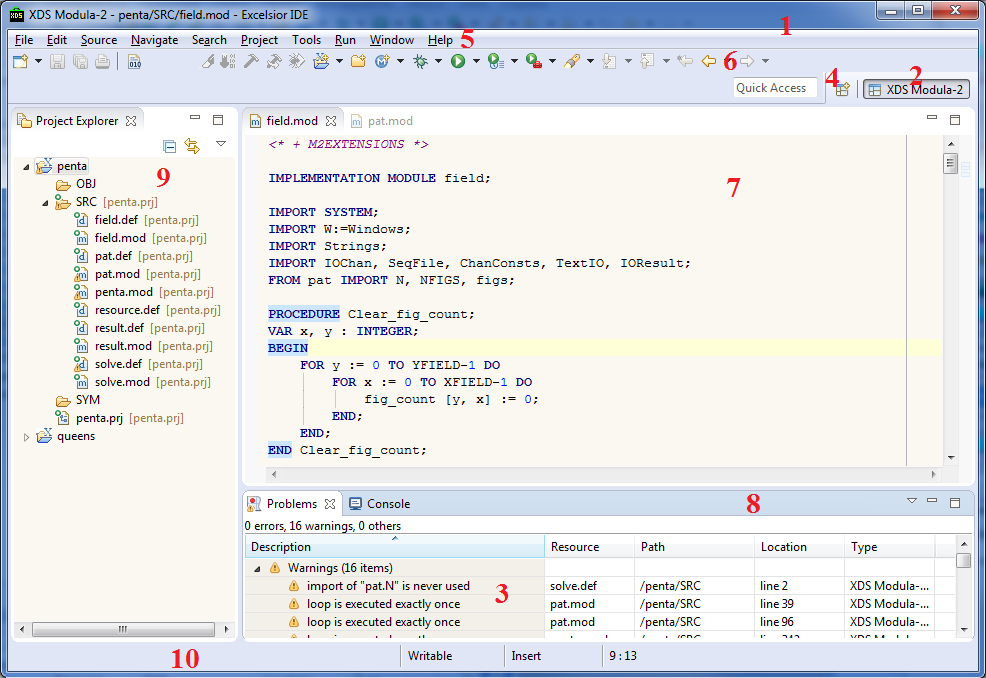
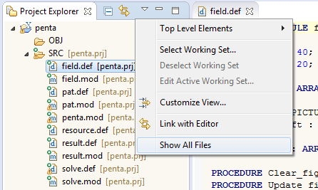
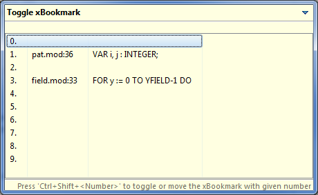
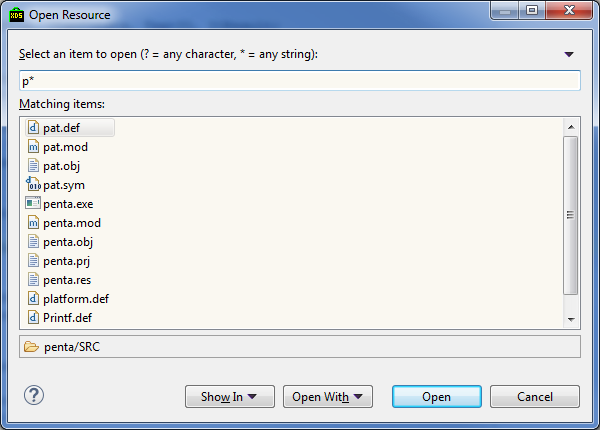
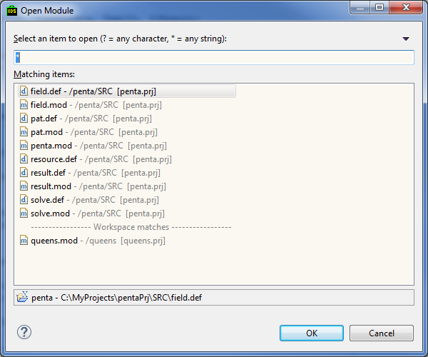
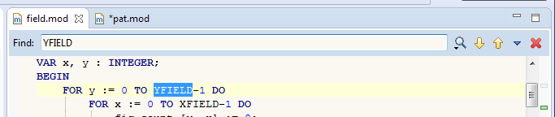
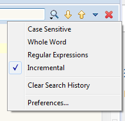
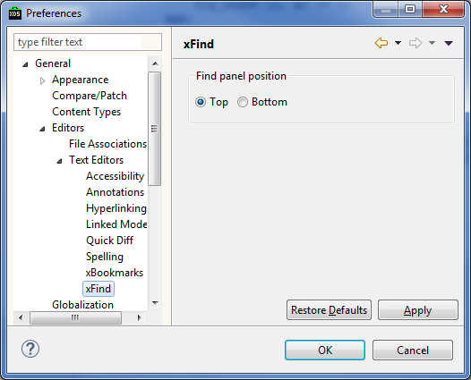

Main elements of the user interface are shown in the picture below:

Main elements are:
toolbar. This perspective is used to develop Modula-2 programs.
Editors and views are child windows of the Workbench. Child windows can be active and inactive but only one child windows can be active at the given moment. Active window has its title highlighted. The active window contents are usualy the target for the Copy, Cut and Paste operations. It is the active window on which the Status bar is dependent from. Views can show information from the last active editor, if there no any active editor at the moment.
One can cycle through the workbench windows using the Ctrl + ~ hotkey.
Lets descrive some main elements in details.
Workbench – is the main window of the IDE which introduces the framework for managing and navigating workspace resources.
Workbench can be rearranged using one of the several perspectives, which are govern the layout of views and editors, organizing them in a way most appropriate for the certain task.
Perspective (Perspective) defines the set and the layout of views, editors, menu items and other elements visible to user. Perspective can have an arbitrary number of views and editors. There can be any number of perspectives, but workbench can have only one active perspective at a time. To see all available perspectives select Window > Open Perspective > Other... in the main
menu.
Main purpose of the perspective is to give user the most appropriate set of tools for the particular task, so all necessary tools will be at hand.
It is possible to restore the initial layout of the perspective by selecting Window > Reset Perspective... at the main menu.
Editor is used to render and edit the resource (usualy file) contents. For each file the separate instance of editor is created.
Changes done in the editor are not commited to underlying file until the save command is invoked.
The editor‘s title contans the * symbol in it when the editor contents is modified but is not written to file.
One can cycle through the editors using the Ctrl + Tab hotkey.
Views usualy provide information about the selected object or element. Some views provide global information, like state of the file system (Project Explorer).
Unlike editors, views immediately apply changes to the object being edited. For example, Project Explorer lacks the Save command – user action
like file copy or rename are immediately affect the corresponding resources. However, few views violate this agreement and require explicit save action from user.
Every view can be closed and then reopened via the Window > Show View > Others... main menu command.
Project Explorer renders resources from a project of the current Workspace as the tree-like structure. This view allows:
Files selected in the Project Explorer can immediately affect contents of other IDE views.
Context menu can be opened for any Project Explorer element by right clicking this element. Context menu allows to view/edit element properties.
For Modula-2 prjects only Modula-2 source files and packet files are shown – that is, files with the following extensions: *.mod, *.def, *.prj, *.pkt, *.res and *.ldp. Other files are filtered out. To see all files select Show All Files action in the Project Explorer action bar.

Modula-2 files which are included in the project compilation set are marked with green dot in the file icon‘s upper right corner. Besides, next to the file name used project file or main module name is shown.
Modula-2 files which are not children of project directory are included in the External Dependencies virtual folder.
If SDK is set to show definition modules then SDK Library virtual folder will show definition module resources.
Wizards are used for the step by step configuration of various parameters.
Typical example of wizard is on the picture below:

Numbered bookmarks are used for the quick navigation in editors.
To set bookmark in the current line press Ctrl + Shift + <Number>, where <Number> – is an arbitrary digit from 0 to 9. So it is possible to set maximum 10 numbered bookmarks. When setting the bookmark, if the digit is already assigned to the other bookmark then the digit will be re-assigned to the new bookmark. If press Ctrl + Shift + <Number> once again – bookmark will be deleted. Press Ctrl + <Number> to jump on the particular numbered bookmark. To see all numbered bookmarks press Ctrl + =.

Select bookmark with the cursor key and press Enter to open the bookmark location (new editor may open).
The particular bookmark can reassigned or delete with the Ctrl + Shift + = hotkey.

To remove all bookmarks select Navigate > xBookmarks > Remove All xBookmarks in the main menu.
To quickly open workspace resource use the Ctrl + Shift + R combination.

Dialog will show all workspace resources (including filtered out in Project Explorer).
Text field atop allows to filter resources by name. Wildcards are supported : * stands for the arbitrary string, ? stands for the single character or emptry string.
To select the Modula-2 module use Ctrl + M hotkey.

To search through the editor contents use xFind panel. It can be invoked with Ctrl + F hotkey.
Atop the editor text field will appear, input the search pattern there. It is possible to change the panel placement in the settings.

Default Eclipse search dialog can be opened with the Ctrl+Alt+F combination.
Press Esc to close the panel.
For now, xFind panel only supports search, to replace use the standard Find/Replace dialog, invoked by the Ctrl + Alt + F hotkey or via the Eclipse main menu.
After typing the search text use Up/Down or Shift+Enter/Enter to navigate through the occurences.
If the xFind panel has input focus then Ctrl + Down will show the search history. Shift+Down hotkey will put the next item from the search history in to the text field.
xFind panel supports all modes of the standard Find/Replace dialog, you can set them in search settings menu:

Besides the xFind panel it is possible to quick find the word. For this just place cursor on the word in the editor and press Ctrl+Up or Ctrl+Down.
One can access the xFind panel settings using the Preferences dialog on theGeneral > Editors > Text Editors > xFind page.

Here you can select the xFind panel placement in the editor.